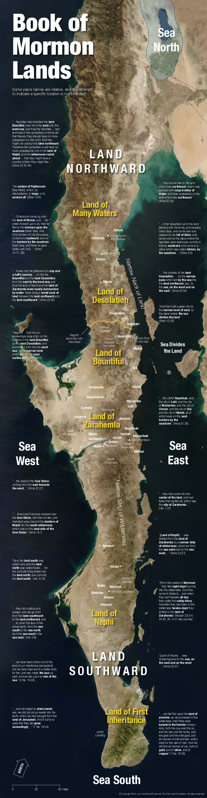

Baja Tracker
Tap the button to check your location
Exact Point

Ready
Tap Share Location to place your current position on the map.
Map source:
A Choice Land
My Location
Tap to place your location on the map.
Show My Location